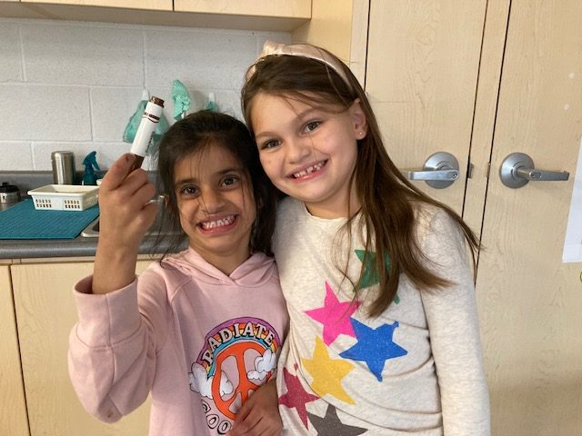

Break the ice, interact, learn about one another, and talk about the qualities of a good friend.
← Elementary & Middle School
Chapter Playbook
A practical look at the year. Start at the beginning, or jump straight to the part you need.
Your chapter doesn’t have to follow this exactly.
Use these five stages as a starting point, move at the pace that works for your group, and choose what helps students spend time together and build friendships.

The whole picture
The year, in five parts.
This playbook follows the Elementary & Middle Program Guide. For current registration, materials, training, dates, and links, use Resources and the Program Calendar.
Check things off if it helps. Your checks stay on this device.
01 Get set up Get the school side sorted, choose a workable meeting rhythm, and know where to find current Best Buddies information.
Get the school side sorted.
You don’t need to keep everything at your fingertips
The Calendar, Resources, and Support sections of this Hub are here whenever you need dates, materials, forms, or help with something specific to your chapter.
02 Recruit + register Let students and families know about Best Buddies, then share the current family registration when your chapter is ready.
Bring students in and get families connected.
Share with families
Parent & Guardian Overview
Find the family handout →
Use this one-page handout when you introduce Best Buddies or send the registration link. It gives families a simple overview of the program, what students can expect, and the benefits of taking part.
03 Start meeting Bring the group together, start with connection, and keep the first gatherings manageable.
Your first gathering can be simple.
The Program Guide starts with Getting to Know Your Buddy. The first four sessions focus on friendship, breaking the ice, understanding one another, and finding common interests.
Program Guide · Phase One · Weeks 1–4
- Defining Friendship
- Breaking the Ice
- Understanding Each Other
- Discovering Common Interests
Want help putting it together?
Build my gathering →
Build a Gathering
Pick your time and what fits your group, or build the plan yourself from Best Buddies activities.
04 Keep friendships growing Use the four Program Guide phases as a backbone, then adjust the pace and activities for your group.
The year in the Program Guide.
Work together, problem-solve, and build on one another’s strengths.
Listen, observe, ask questions, and practise empathy.
Encourage one another, build awareness, and create a more inclusive school community.
Participation is already in the resources
The Best Buddies guides include real modifications and communication-focused activities. Examples include partner support, assistive-speaking-device options, Sign Language Bingo, AAC Device Bingo, and other non-speaking communication activities.